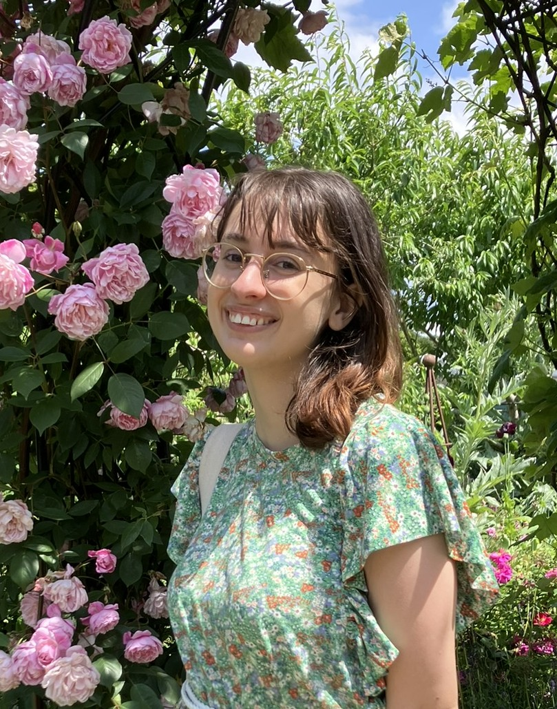

Welcome!
My name is Adriana Baldacchino, a current MSc student at the University of Oxford, following the Mathematics and Foundations of Computer Science course. This September, I will be starting a PhD in Computer Science at the University of Birmingham, supervised by Prof. Anupam Das.
Previously, I attained a B.Sc. (Hons) in Mathematics and Computer Science from the University of Malta, specialising in the Graph Theory and Combinatorics stream. My final year project was on Goodstein's theorem and its independence to PA, supervised by Dr. Beatriz Zamora-Aviles.
My main research interests are mathematical logic, proof theory, automata theory and complexity theory. For a detailed look at my work in and out of academia, kindly view my curriculum-vitae.
Projects
Undergraduate Dissertation: Goodstein Sequences and Unprovability of Peano Arithmetic
This was my final year dissertation for my B.Sc. at the University of Malta, and was supervised by Dr. Beatriz Zamora-Aviles. In this work, we go through the details of the proof that Goodstein's theorem is unprovable in PA. This centers mainly around three papers: Caicedo's explicit formulation of Goodstein's function in terms of fast growing functions, Ketonen and Solovay's results on these fast growing functions and Buchholz and Wainer's results for provably computable functions. This work involved consolidating all these results in terms of the same fast growing functions, and giving extended proofs.
If you are interested, please find the completed work here.
Refinement Preorders for Multi-Verdict Monitors
This project was submitted as part of my B.Sc. at the University of Malta and was supervised by Prof. Adrian Francalanza. In this project, I extended my supervisor's work on monitor preorders to work for monitors which detect multiple conflicting verdicts.
The submitted work can be found here. The project is still ongoing — I have done further work in refining the monitor preorders and introducing new ones, and currently the project is in the hands of another student who is working to generalise the results to an arbitrary process language.
Colouring 2-crossing-critical graphs
This project emerged from a week-long workshop hosted by Prof. Drago Bokal from the University of Maribor at the University of Malta. This is in collaboration with Marietta Galea, Prof. Drago Bokal and Prof. John Baptist Galea. In this work, we close the open problem of chromatic numbers of arbitrary large 2-crossing-critical graphs by providing an explicit characterisation.
The work is in its final stages, but some slides presenting our results can be found here.
CERN Summer Student Project
As part of my Summer student experience at CERN in the Summer of 2023, I embarked on a project with the IT department on integrating Overleaf support with CERNBox, the storage software used at CERN. This project was supervised by Javier Ferrer and Giuseppe Lo Presti.
My report on this project can be found online at this link.
Master's Dissertation: Automata over Nested Data
As part of the MFoCS program, I am currently writing a dissertation on automata over nested data, which is being supervised by Prof. Andrzej Murawski. This work entails extending existing models for automata over nested data, which only operate over bounded data, to handle the unbounded case.
This work will be presented at the Women in Logic Workshop 2025, for which I wrote an extended abstract and slides.
All content, unless otherwise stated, on this site is © Adriana Baldacchino (2025).